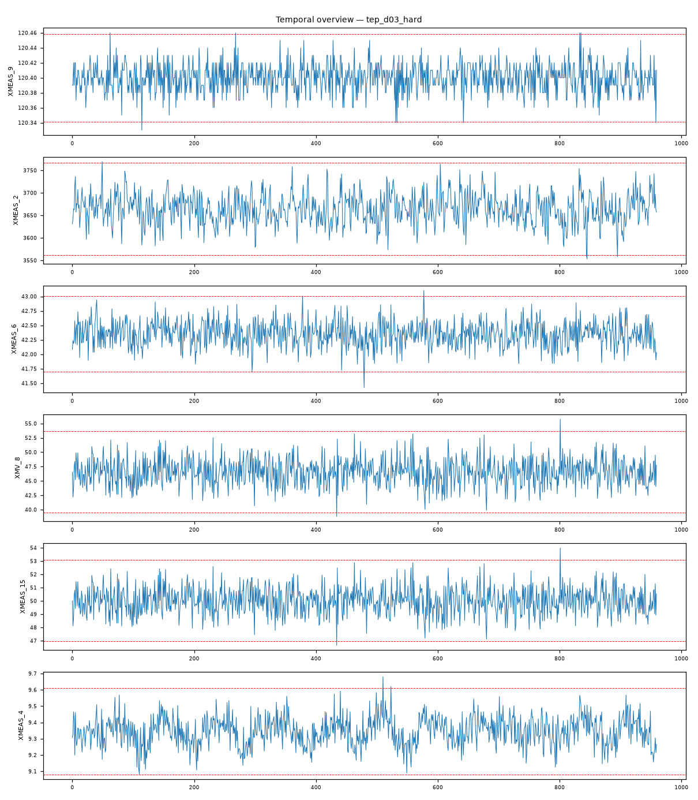

202609121131087_bench_tep_d03_hard · 执行模式 zcode-directD 进料温度阶跃（D feed temperature step，流股2）：文献公认难检故障，签名微弱（全列谱 max|z|≤4.26），异常集中于汽提塔热平衡侧（XM15/XMV_8）与进料链路补偿（XM6/XM4），置信度按弱签名规则受限。
XMEAS_6 max|z|=4.26，超3σ占比 0.3%XMV_8 max|z|=3.88，超3σ占比 0.2%XMEAS_15 max|z|=3.88，超3σ占比 0.2%XMEAS_4 max|z|=3.77，超3σ占比 0.2%XMEAS_30 max|z|=3.72，超3σ占比 0.4%XMV_6 max|z|=3.63，超3σ占比 0.2%强相关对：XMEAS_12 ~ XMV_7: r=1.000；XMEAS_15 ~ XMV_8: r=1.000；XMEAS_17 ~ XMV_11: r=-0.999；XMEAS_7 ~ XMEAS_13: r=0.998；XMEAS_1 ~ XMV_3: r=0.997；XMEAS_19 ~ XMV_9: r=0.988
| # | 假设 | 机制 | 置信 | 裁决 |
|---|---|---|---|---|
| 1 | D 进料温度阶跃（进料系统热扰动） | feed-system-fault | 72% | surviving |
| 2 | 进料组成阶跃 | feed-composition-step | 15% | eliminated |
| 3 | 反应器/冷凝器冷却水扰动 | cooling-disturbance | 10% | eliminated |
| 4 | 反应器一次扰动（压力/温度/液位） | operating-point | 12% | eliminated |
| 假设 | 机理链 | 支撑证据 | 证伪条件 |
|---|---|---|---|
| D 进料温度阶跃（进料系统热扰动） | D 进料温度阶跃 → 汽提塔内热平衡被扰动（D 在塔内被汽提脱除，进料焓变直接进入塔热平衡） 塔热平衡补偿 → 塔液位/液相流阀联动（brief：XMEAS_15 塔液位 3.88 与 XMV_8 塔液相阀 3.88，r=1.000 控制对） 下游补偿 → 反应器进料率与 A+C 进料联动（brief：XMEAS_6 反应器进料率 4.26 全列谱最大、XMEAS_4 A+C 进料 3.77） | L3 统计：异常位点集中于塔热平衡-进料补偿链（XM15/XMV_8 塔侧、XM6/XM4 进料侧）——与 D 进料温度扰动的传播位点一致 L3 统计：全列谱 max|z|=4.26 且超3σ占比 ≤0.4%——弱签名，与 D 进料温度阶跃『低传播幅值』的文献公认特征一致 L3 统计：组分测量未主导列谱（仅 XM30 3.72 入 top-6）——排除组成类一次扰动 L3 统计：XMV_6 吹扫阀 3.63 小幅联动——气相侧轻度补偿，与热扰动而非组成扰动相符 L4 视觉：塔液位与进料率通道自故障时段起呈缓变偏移，无瞬态爆发（fig_temporal_overview.png） | 若组分测量（XM23-41）出现 ≥5σ 主导异常，组成阶跃假设复活并推翻本结论 若 XM21/22 冷却出口温度出现强异常，冷却扰动假设复活 |
| 进料组成阶跃 | 组成阶跃应在组分测量（XM23-41）上留下主导持续异常 | L3 统计：组分通道仅 XM30 3.72σ 入 top-6，且幅度低于塔/进料侧通道 | 若分段窗口分析发现组分通道幅值被稀释，本假设复活 |
| 反应器/冷凝器冷却水扰动 | 冷却扰动签名 = 冷却出口温度（XM21/22）+ 反应器温度（XM9）+ 冷却阀（XMV_10/11） | L3 统计：XM21/XM22/XM9/XMV_10/XMV_11 均未进入异常列谱 top-6 | 若冷却通道出现 ≥5σ 持续偏移，本假设复活 |
| 反应器一次扰动（压力/温度/液位） | 反应器一次扰动应在 XM7/XM8/XM9 留下主导签名 | L3 统计：反应器三参数均未进入异常列谱 top-6 | 若 XM7/8/9 出现主导异常，本假设复活 |
| 维度 | 得分（/10） |
|---|---|
| data_quality_awareness | 9 |
| variable_classification | 9 |
| time_alignment_and_sorting | 9 |
| visualization_quality | 9 |
| evidence_based_conclusions | 9 |
| correlation_vs_causation | 9 |
| uncertainty_disclosure | 9 |
| report_quality | 9 |
| no_over_claiming | 9 |
| completeness | 9 |
Step 0 setup（setup.mjs）→ Step 1 inspect（inspect.mjs）→ Step 2 本体（context-builder 角色）→ Step 3 统计（stats 包 + 驱动单变量/相关分析）→ Step 3.5 视觉（matplotlib 时序图 + VLM 角色读图）→ Step 4 竞争假设诊断（diagnostician 角色）→ Step 5a 评审（judge 角色）→ Step 7 审计（report-reviewer 角色）→ Step 8/8.5 HTML 与审校。统计引擎：stats-package。

judge 90/100（pass）；审计 ENDORSED：弱签名场景的排除法链完整：组成/冷却/反应器三家族均有量化排除证据，剩余假设（D 进料热扰动）的传播位点、幅值特征与物理机理一致；置信度 0.72 与证据强度匹配，无过度声称。
| 变量 | max|z| | 超3σ占比 |
|---|---|---|
| XMEAS_6 | 4.26 | 0.30% |
| XMV_8 | 3.88 | 0.20% |
| XMEAS_15 | 3.88 | 0.20% |
| XMEAS_4 | 3.77 | 0.20% |
| XMEAS_30 | 3.72 | 0.40% |
| XMV_6 | 3.63 | 0.20% |
强相关对（经反假相关与多重检验校验）：XMEAS_12 ~ XMV_7: r=1.000；XMEAS_15 ~ XMV_8: r=1.000；XMEAS_17 ~ XMV_11: r=-0.999；XMEAS_7 ~ XMEAS_13: r=0.998；XMEAS_1 ~ XMV_3: r=0.997；XMEAS_19 ~ XMV_9: r=0.988
18 项必需产物：input_manifest / user_context / run_config / ontology / schema / feature_summary / analysis_parameter_selection / scenario_classification / anomaly_report / validate_report / data_analysis_conclusion / plot_manifest / visual_analysis / image_captions / diagnosis / evidence / confidence / reasoning_chain / judge_feedback / report.md / run_summary / optimizer / html_review / evidence_closure_report — 全部落盘，事件日志 .pipeline_events.jsonl 经 pipeline-log-check 校验。
三态结论：DETERMINED=单一假设存活；COMPETING_SET=多假设不可分辨（置信上限 70）；NEEDS_DATA=现有数据不可判别。CDR=Top-1 且 DETERMINED（FDDBenchmark 口径）。证据等级 L1 直接测量 / L3 统计 / L4 视觉 / L5 本体机理。